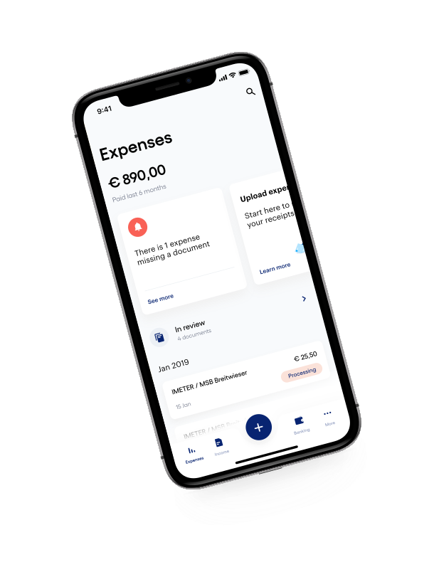
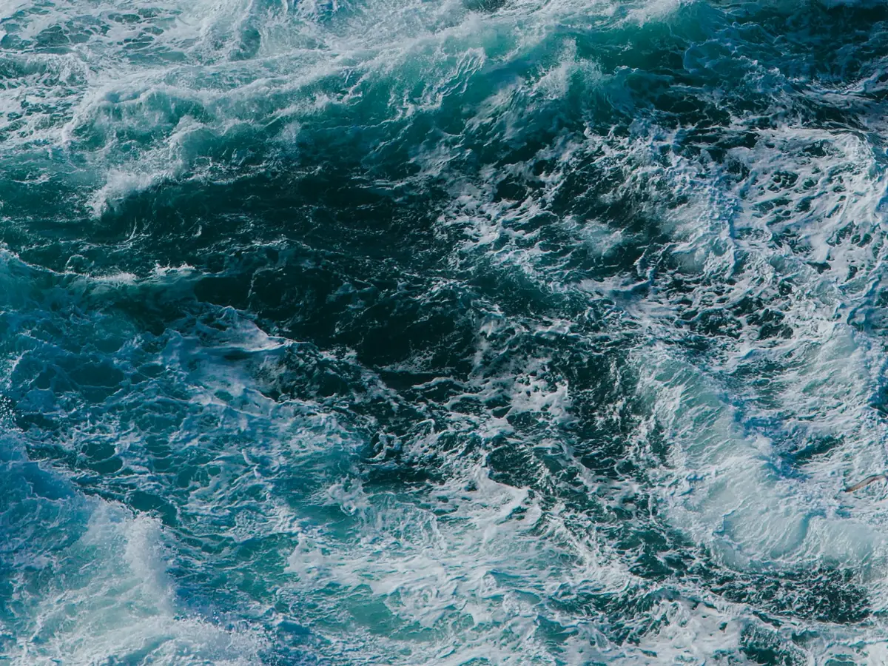

Portfolio
Principal Product Designer working on design systems, mobile and cross‑platform UX, and agentic UI.
Selected work
Case studies
Agentic Onboarding
Showing value before asking for a signup. A Setup Agent turns a company name into a working sales pipeline, and only then asks for an account.
Read case study
Pipedrive customisable navigation
Updating the CRM navigation layout for better user experience and feature discovery, and giving users a navigation they can customise.
Read case study
Pipedrive design system
Building and maintaining web app and mobile design systems for React, iOS and Android, covering tokens, components, guidelines, accessibility and design reviews.
Read case studyXolo mobile app
UX design for a fintech app that helps freelancers run their business from anywhere, with banking, accounting and one of the simplest tax systems in the world.
Read case study
Boat monitoring and alarming system
Researching boat interfaces, running qualitative research and usability tests, and building the assets for a boat monitoring and alarming platform.
Read case study

About
Systems thinking, applied to real products.
Principal product designer with 9+ years of experience in design systems, mobile and cross‑platform UX, and now agentic, AI‑powered product experiences.
At Pipedrive I've worked on agentic onboarding and other AI features, customisable navigation and the feature discovery strategy, and built the mobile design systems for iOS, Android and React.
View resume